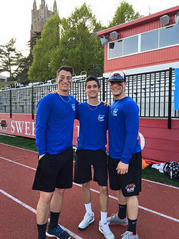

Lambda Chi Alpha
Founded: November 2, 1909 at Boston University
Philanthropy: Feeding America
Mission Satement: The mission of Lambda Chi Alpha is to offer the best fraternal experience, focusing on personal character development through leadership, scholarship, community service, and positive social experiences.
Motto: Per Crucem Crescens
Color: Purple, Green, and Gold
Symbol: Cross and Crescent
Mascot: Lion Rampant
SJU Events: Swings for a Cure
